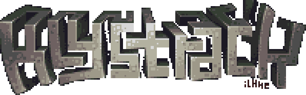

.png)
.png)
.png)
.png)
.png)
.png)
.png)
.png)
klystrack is a tracker for making C64/NES/Amiga-style chiptunes on a modern platform. Here are some features:
- Sound
- Additive synthesis with filters (think SID, Atari, NES etc.)
- Hard sync and ring modulation (like SID)
- FM synthesis (think Adlib, MSX, OPL2 etc.)
- Wavetable for samples or custom waveforms to be used in synthesis (think Amiga, SNES)
- Built-in wave generator and editor
- Programmable instruments not limited to simple arpeggios
- Sequencer
- Tracker with free positioning of patterns
- Pattern transpose
- Pattern length is not fixed
- Hard limit of 32 channels but this can be raised (just ask if you need more... sounds crazy, though)
- Fully themeable, includes half dozen themes
- Effects
- Stereo chorus
- SNES-style multitap echo
- Bit crusher/decimator
- Export
- Own custom format with a tiny playback library to be used in games, demos etc.
- Export as .WAV
- Export each track as separate .WAV's
- Export wavetable items as .WAV's (use klystrack to create one-cycle waveforms)
- Import
- Import .WAV's to use as samples
- Import Protracker and FT2 modules
- Import C64 SID files (Rob Hubbard player)